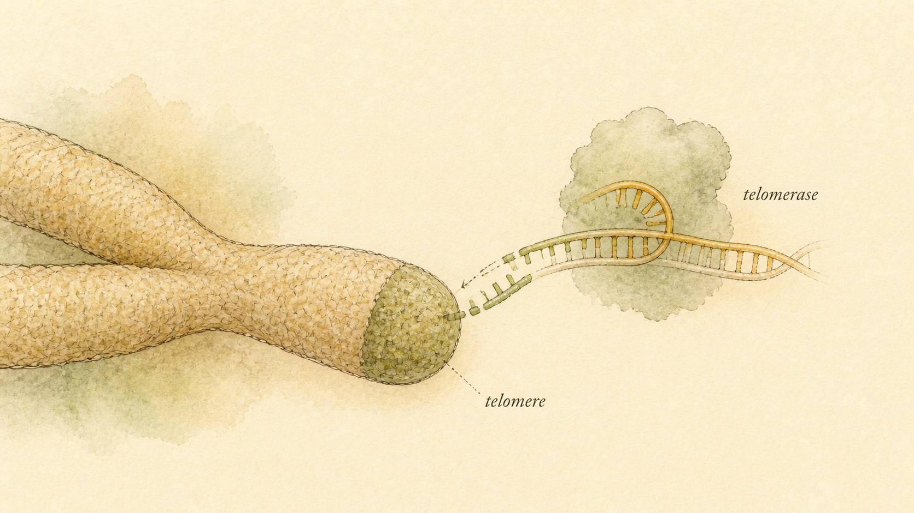

Longevity and Systemic Miscellany
Four peptides promise to slow the clock, protect the mitochondria, calm the immune system, or quiet a damaged nerve, and the honest evidence behind each claim is smaller, older, or thinner than the marketing language ever admits.
Osric, 41, found the ad the way most people find these things now, scrolling late, half paying attention, when a post stopped his thumb: a peptide that "activates telomerase and switches on your longevity genes," next to a photograph of a chromosome with a glowing cap on each end. The compound was epithalon. A few clicks deeper, the same storefront was also selling humanin, described as "your mitochondria's own repair signal," a compound called ARA-290, described as "nerve regeneration without the risks of steroids," and a nasal spray of vasoactive intestinal peptide, described as "immune system reset for chronic inflammatory illness." Four different products, four different claims, and one thing tying them together that the storefront never mentioned: none of them fit cleanly into any of the categories this course has already covered. They are not primarily healing peptides, not primarily cosmetic, not primarily antimicrobial, not primarily an immune modulator in the classic sense, not primarily neuro or cognitive, not melanocortins. They are a genuine miscellany, compounds that share a family resemblance mainly in how they are marketed, as tools for living longer, protecting cells under stress, or resetting a system that has gone wrong somewhere upstream.
Osric wanted to know two things before he read another word of marketing copy: what these four molecules are actually claimed to do, mechanistically, and how much of that claim is something a scientist could show him in a controlled experiment versus something that sounds plausible because it is dressed in the vocabulary of cell biology. Those are exactly the two questions this chapter answers, compound by compound, and the answer will look different for each of the four. That unevenness is the point. A chapter that treated all four compounds as equally speculative, or equally validated, would be doing exactly the thing this course exists to correct: flattening a real, gradient distribution of evidence into a single confident story.
This chapter follows Osric's questions through four sections, one for epithalon, one for humanin, one for ARA-290 (also called cibinetide), and one for vasoactive intestinal peptide, abbreviated VIP throughout. Each section states plainly what the compound is claimed to do, the mechanism proposed to explain that claim, and the honest evidence grade behind it, preclinical cell and animal work, a handful of small or aging human studies, or actual controlled human trials. None of this chapter is dosing guidance, a stack design, or a recommendation. It is the biochemistry and the evidence base underneath four names that circulate constantly in longevity and biohacking spaces, laid out so a learner like Osric can tell the difference between a mechanism that has been demonstrated and a mechanism that has only been proposed.
One shelf, four very different evidence bases
Chapter 1 of this module introduced an evidence ladder that this course returns to constantly: a claim can rest on a controlled human trial, on animal or cell-culture data alone, on informal self-report circulating in a community, or on nothing more than a vendor's marketing copy. That ladder matters more in this chapter than in almost any other, because the four compounds gathered here sit at genuinely different rungs, and the marketing language surrounding all four is nearly identical regardless of which rung a given compound actually occupies. A product page selling epithalon and a product page selling ARA-290 will often use the same tone, the same confident verbs, the same implication of settled science. The underlying evidence does not match that uniformity at all.
Epithalon's core claims, telomerase activation and a meaningful effect on human lifespan, rest almost entirely on a body of work from a single research group in St. Petersburg, published mostly in one journal, mostly in cultured human cells and rodents, with no controlled human trial demonstrating a lifespan or aging-outcome benefit. Humanin's claims are broader and the supporting literature is larger, but it remains overwhelmingly preclinical, cell and animal studies of a naturally occurring mitochondrial signal, plus correlational human studies that measure circulating humanin levels against age or disease without ever testing whether giving a person more humanin changes an outcome. ARA-290 stands apart from the other three: it has been through actual phase 2 human trials, with control groups, validated pain questionnaires, and published results in a peer-reviewed pharmacology journal, according to van Velzen and colleagues (2014). That does not mean ARA-290 is an approved therapy, it is not, but it means its evidence grade is categorically different from a compound whose entire human data set is anecdotal. VIP occupies its own niche: real, decades-old physiology explaining how it modulates immune tissue, and a small number of actual human studies, mostly in one disease, sarcoidosis, using inhaled or nebulized delivery rather than the injectable route more common elsewhere in this course.
Why does the unevenness matter more than the individual facts themselves? Because a learner scanning a wellness storefront, a supplement forum, or a research-chemical vendor's product description almost never encounters the evidence tier alongside the claim. The claim arrives first, phrased with the borrowed authority of cell biology and pharmacology vocabulary, and the tier, if it is disclosed at all, arrives buried in a footnote or not at all. Learning to ask "what tier is this claim actually resting on" before evaluating whether the claim is interesting is the single transferable skill this chapter is built to practice, and it applies just as well to compounds this course has not covered as it does to the four discussed here.

Epithalon: a four-letter peptide with a very large claim attached
Epithalon, sometimes spelled epitalon, is a synthetic tetrapeptide, a chain of exactly four amino acids, with the sequence alanine, glutamic acid, aspartic acid, glycine, commonly abbreviated by its letter code, AEDG. It did not emerge from a pharmaceutical pipeline in the way most compounds in this course did. It was synthesized as a simplified analog of a much older preparation called epithalamin (also spelled epitalamin), a complex extract of peptides isolated from the pineal gland of calves, developed decades ago by a research group at the St. Petersburg Institute of Bioregulation and Gerontology under Vladimir Khavinson. The pineal gland is the small, deep-brain structure best known for producing melatonin, the hormone that governs the body's sleep-wake cycle, and the original hypothesis behind epithalamin, and later epithalon, was that a signal originating in the pineal gland might help regulate the pace of biological aging more broadly, not only sleep timing, by influencing the pineal-melatonin axis and, through it, other neuroendocrine rhythms that shift as a person grows older.
The specific mechanistic claim that has made epithalon a fixture of longevity marketing is its proposed effect on telomerase, the enzyme that adds repetitive DNA sequence back onto the ends of chromosomes, called telomeres, which otherwise shorten by a small amount every time a cell divides. Telomere shortening is one of several processes linked to cellular aging, and a cell that cannot activate telomerase eventually reaches a maximum number of divisions, a limit named after the scientist who first described it, the Hayflick limit. According to Khavinson, Bondarev, and Butyugov (2003), exposing telomerase-negative human fetal fibroblasts, a type of connective tissue cell grown in a laboratory dish, to epithalon peptide induced expression of the telomerase catalytic subunit, measurable telomerase enzymatic activity, and elongation of the cells' telomeres. In a related paper, Khavinson, Bondarev, Butyugov, and Smirnova (2004) extended this finding, reporting that epithalon-treated fibroblasts that had already reached the end of their normal proliferative lifespan in culture went on to complete roughly ten additional rounds of division beyond untreated cells before their growth slowed again, which the authors interpreted as the peptide helping the cells overcome the Hayflick limit.
Read those two findings exactly as written, and they are genuinely interesting cell-biology results: a peptide added to a laboratory dish of human cells was associated with measurable telomerase activity and extended proliferation in that dish. Read them as "epithalon activates telomerase and extends lifespan," the framing used constantly in marketing copy, and something has been added that the original data does not contain. A fibroblast dividing a few extra times in a plastic dish is not the same claim as a living human aging more slowly, and the distance between those two claims is enormous. The cell-culture and rodent literature behind epithalon comes overwhelmingly from this same St. Petersburg group, published mostly in one journal, and it has not been independently replicated at scale by unrelated laboratories using controlled human trials with clinically meaningful endpoints, mortality, disease incidence, or validated biomarkers of aging measured over years. That absence is not proof the effect is false. It is simply the honest description of where the evidence currently stands: a real, published, peer-reviewed cell-biology finding, resting on a narrow evidence base, generalized into a sweeping human anti-aging claim that the underlying studies were never designed to support.
Epithalon belongs to a broader concept Khavinson's group calls peptide bioregulation, the hypothesis that very short peptides, three to four amino acids long, can act as tissue-specific regulatory signals, with different short sequences proposed to influence different organs, a peptide for the pineal gland, a different one proposed for the thymus, another for the retina, and so on. This is a genuinely distinct theoretical framework from the receptor-ligand pharmacology that dominates most of this course, where a specific molecule binds a specific, well-characterized receptor with a documented downstream signaling cascade, of the kind described for ARA-290 later in this chapter. The peptide bioregulation framework has not achieved the same level of independent mechanistic characterization or acceptance in mainstream pharmacology, and epithalon's proposed direct binding site or receptor, if one exists in the way AR or the EPO receptor exist for other compounds in this course, has not been clearly identified in the literature reviewed for this chapter. That gap, a claimed biological effect without a clearly mapped receptor mechanism, is itself worth flagging as part of the honest evidence picture, separate from the telomerase and lifespan claims addressed above.
Beyond the telomerase claim, epithalon is also marketed for its proposed effect on the pineal-melatonin axis, framed as helping to regulate sleep architecture and, through it, the broader hormonal rhythms that shift with age, cortisol timing, gonadal hormone output, and immune signaling among them. This piece of the story is mechanistically plausible in the sense that the pineal gland genuinely does coordinate circadian signaling, and pineal function does change over a lifetime, but the specific claim that exogenous epithalon meaningfully restores youthful pineal-melatonin function in a human has not been demonstrated in controlled trials with the rigor that claim would need. The intended, claimed use, in plain terms, is anti-aging and lifespan extension by way of telomerase activation and pineal-axis regulation. The honest evidence grade behind that use is preclinical, and weak even by preclinical standards, resting on a small number of studies from one research group, without independent replication or any controlled human outcome trial.
Humanin: a signal written into the mitochondrial genome
Humanin is a short peptide with an unusual origin story among the compounds this course has covered: it is not encoded by a gene on any of the twenty-three chromosomes in the human cell nucleus. It is encoded within mitochondrial DNA (mtDNA), the small, separate loop of genetic material carried inside mitochondria, the organelles responsible for generating most of a cell's usable energy. Specifically, humanin's coding sequence sits inside a region of mtDNA that also encodes part of the 16S ribosomal RNA, one of the molecules mitochondria use to build their own internal protein-making machinery. Because of this origin, humanin belongs to a category researchers call mitochondrial-derived peptides (MDPs), a small family of signals, discovered only in the past two decades, that mitochondria appear to release as messages to the rest of the cell, and in some cases to distant tissues, about the mitochondria's own stress level.
According to Coradduzza and colleagues (2023), reviewing the peptide systematically, humanin functions primarily as a cytoprotective signal, meaning its proposed job is to help cells survive various forms of stress rather than to build new tissue or trigger a specific developmental program the way many other peptides in this course do. Mechanistically, humanin has been shown in laboratory studies to interact with several different intracellular and extracellular targets. According to Zhu, Hu, Bennett, Xu, and Mai (2022), inside the cell humanin can bind pro-apoptotic proteins, proteins that push a stressed or damaged cell toward programmed cell death, including a protein called BAX, and by binding them, humanin appears to blunt the signal that would otherwise commit the cell to dying. When humanin is released from cells and acts as a secreted signal instead, it has been shown to interact with cell-surface receptors, including a receptor called formyl peptide receptor-like 1 and a receptor complex built from CNTFR-alpha, gp130, and WSX-1, triggering an internal signaling cascade, the JAK2/STAT3 pathway (Janus kinase 2 and signal transducer and activator of transcription 3), that is associated with cell survival in multiple tissue types.
This mechanism is the basis for humanin's intended, claimed uses in the longevity and biohacking space: broad cytoprotection, meaning protecting cells, especially metabolically demanding cells like neurons and cardiac muscle cells, from stress-induced death, and a related metabolic role, since mitochondria sit at the center of how a cell manages energy and oxidative stress. According to Hazafa and colleagues (2020), reviewing humanin's anti-apoptotic activity, laboratory and animal studies have linked humanin to protective effects across a genuinely wide range of contexts: neurodegenerative disease models, cardiovascular stress models, diabetes-related cell damage, and models of bone-cell turnover relevant to osteoporosis. That breadth is itself worth noting, because it is characteristic of an early-stage, mechanistically interesting signal rather than a compound with an established, specific clinical use. A molecule genuinely useful for one well-defined human condition tends to accumulate focused trial evidence in that one condition. A molecule still being explored across a dozen loosely related preclinical models is, by definition, still in the discovery phase.
Humanin's discovery has a specific origin worth understanding, because it explains why the peptide first drew research attention outside pure mitochondrial biology. According to reviews by Coradduzza and colleagues (2023) and Zhu and colleagues (2022), humanin was first identified through screening of tissue from a surviving population of neurons in an Alzheimer's disease brain, cells that had somehow resisted the toxic effects of amyloid-beta, the misfolded protein central to Alzheimer's pathology, that killed neighboring neurons. Researchers were looking for whatever factor let those specific neurons survive when so many nearby cells did not, and humanin emerged from that search as a peptide capable of protecting cultured neurons from amyloid-beta toxicity in follow-up laboratory experiments. That origin story is part of why humanin's proposed uses lean so heavily toward neuroprotection and broader cytoprotection, and it is a genuinely compelling starting hypothesis. It remains, however, a starting hypothesis rather than a demonstrated human treatment, decades after the initial observation.
Human evidence for humanin exists, but it is almost entirely correlational rather than interventional. Researchers have measured circulating humanin levels in blood samples from people at different ages and with different disease states, and have found associations, generally lower circulating humanin correlating with markers of aging or with certain chronic diseases, though findings vary across studies and tissue types. This kind of observational data can generate a hypothesis worth testing. It cannot, on its own, establish that giving a person additional humanin, or a humanin-like analog, would change any outcome, because correlation between a natural signal's level and a health state says nothing about whether restoring that level from the outside would help, would do nothing, or could even cause harm by disrupting a regulatory system that is behaving appropriately given the underlying stress it is responding to. No controlled human trial of exogenous humanin as a therapeutic intervention has been published establishing a clinical benefit in any indication. The honest evidence grade is preclinical, cell and animal studies of a real, naturally occurring signal, layered under correlational human data, with no completed human intervention trial behind it.
ARA-290 (cibinetide): built from erythropoietin, engineered to leave the blood alone
ARA-290, also known by the name cibinetide, has a more conventional pharmaceutical development history than epithalon or humanin, and that history matters for understanding why its evidence grade looks different from the other three compounds in this chapter. ARA-290 is derived from erythropoietin (EPO), the hormone the kidneys normally produce to stimulate the bone marrow to make more red blood cells, and the same hormone that has a long, well-documented history of misuse in endurance sport for exactly that blood-boosting effect. ARA-290 is not simply EPO under a different name. It is a short peptide built from a specific helix region of the EPO molecule, engineered deliberately to bind a different receptor target than the one that drives red blood cell production.
Ordinary EPO signals by binding a receptor that exists as a pair of identical subunits, called a homodimer, and that specific receptor configuration is what triggers the bone marrow's red-blood-cell-producing machinery. ARA-290, and the class of engineered EPO derivatives it belongs to, was designed to instead activate a different receptor arrangement, sometimes called the innate repair receptor, formed when the EPO receptor pairs with a different partner subunit, part of a receptor known as CD131 or the beta common receptor, rather than with a second copy of itself. This alternate receptor complex is expressed in tissue involved in injury response and inflammation regulation, including certain nerve and vascular tissue, but it is not the configuration that drives erythropoiesis. The practical consequence is the entire reason ARA-290 exists as a distinct compound: it can activate the tissue-protective, repair-oriented signaling associated with EPO's receptor family without meaningfully stimulating red blood cell production, avoiding the thickened blood, elevated clotting risk, and cardiovascular strain that make unsupervised EPO use dangerous.
The intended, claimed use built on this mechanism is protection and repair of stressed or damaged tissue, especially nerve tissue, with a specific, published clinical focus on neuropathic pain, pain arising from damaged or dysfunctional nerve fibers rather than from ordinary tissue injury. According to van Velzen, Heij, Niesters, Cerami, Dunne, Dahan, and Brines (2014), reviewing two completed phase 2 clinical trials, ARA-290 treatment in patients with sarcoidosis, an inflammatory disease that can damage small sensory nerve fibers and cause chronic neuropathic pain, was consistently associated with meaningful improvement in validated pain questionnaire scores. The same review reported objective findings alongside the patient-reported outcomes: increases in the measured density of corneal nerve fibers, a small, biopsy-free way of assessing small-fiber nerve health, along with improved sensory pain thresholds, better self-reported quality of life, and better physical functioning, with a favorable safety profile across the trials and no evidence of the hematologic side effects associated with standard EPO therapy.
It is worth situating this within the ordinary pharmaceutical development pathway, because that pathway is what makes the phrase "phase 2 trial" meaningful rather than just impressive-sounding. A drug candidate typically moves through phase 1, small studies focused mainly on safety and dosing in a limited number of participants, then phase 2, somewhat larger studies, like the ones described here, that begin testing whether the drug actually produces the intended effect in patients with the target condition, then phase 3, large, often multi-site, placebo-controlled trials designed specifically to confirm efficacy and safety at a scale sufficient to support regulatory approval. ARA-290 has published, peer-reviewed phase 2 data. It has not, as of the evidence reviewed for this chapter, completed and published the phase 3 data that would be required for approval by a regulator such as the United States Food and Drug Administration. Encouraging phase 2 results are a genuinely meaningful signal, and they are also, across the pharmaceutical industry broadly, not a reliable guarantee of eventual approval, since a nontrivial share of drug candidates that perform well in phase 2 fail to replicate that performance at phase 3 scale.
This is, among the four compounds in this chapter, the one with the strongest published human evidence, and it is worth being precise about exactly how strong that is and is not. Two completed phase 2 trials with consistent, statistically meaningful results in one specific condition is genuinely more than cell-culture data or correlational observation. It is not the same as a completed phase 3 trial, and it is not regulatory approval. ARA-290 remains an investigational compound, not an approved medicine, and phase 2 results, however encouraging, have a well-documented history across pharmaceutical development of not always replicating at the larger scale and longer duration a phase 3 trial requires. The honest evidence grade for ARA-290 is: some real phase 2 human data, specific to sarcoidosis-associated small fiber neuropathy, promising but not confirmatory, and not a basis for treating the compound as an established therapy for neuropathic pain in general.
Vasoactive intestinal peptide: a real immune signal, tested in a narrow lane
Vasoactive intestinal peptide (VIP) is, unlike the other three compounds in this chapter, a naturally occurring human neuropeptide that has been studied for decades, with a well-established role in the body long before anyone considered it as a longevity or wellness product. VIP is produced widely across the nervous and immune systems and acts on two G-protein-coupled receptors, called VPAC1 and VPAC2, expressed on a broad range of tissue types, including cells of the immune system. Its name reflects one of its original, better-characterized roles, relaxing smooth muscle in blood vessels and the gut, but the property that has made it relevant to this chapter is its separate, well-documented action as an immune and inflammatory modulator.
According to Souza-Moreira, Delgado-Maroto, and Delgado (2012), reviewing VIP's immunoregulatory biology, VIP acts on immune cells to shift the balance of an immune response away from aggressive, pro-inflammatory activity and toward a more tolerant, regulated state. Mechanistically, this includes downregulating the production of inflammatory signaling molecules, promoting the development of regulatory T cells, a subtype of immune cell that actively restrains other immune cells rather than attacking, and encouraging dendritic cells, which help direct the immune response, toward a less inflammatory, more tolerance-promoting profile. This body of work has been built up mostly in laboratory and animal models of autoimmune disease and transplant rejection, where inducing exactly this kind of regulatory shift is the desired outcome.
The specific human clinical context where VIP has actually been tested, intranasally and by inhalation, is sarcoidosis, a disease in which the immune system forms clusters of inflammatory cells called granulomas in organs, most often the lungs, driven substantially by excessive production of an inflammatory signaling molecule, tumor necrosis factor-alpha, by immune cells in affected tissue. According to Prasse and colleagues (2010), in an open-label phase II clinical study, twenty patients with active, biopsy-confirmed sarcoidosis were treated with nebulized (inhaled) VIP for four weeks. The treatment was reported as safe and well tolerated, and it significantly reduced tumor necrosis factor-alpha production by immune cells recovered from the patients' lungs. The same study reported that VIP treatment increased the population of a specific regulatory T cell subset in the lung fluid and demonstrated, in parallel laboratory experiments, that VIP could convert ordinary immune T cells into that same regulatory phenotype. Prasse and colleagues describe this as the first demonstration of VIP's immunoregulatory effect specifically in humans, framing inhaled VIP as a candidate approach for chronic inflammatory lung conditions generally, while stopping well short of calling it an established treatment.
According to Souza-Moreira, Delgado-Maroto, and Delgado (2012), VIP's regulatory effect on immune tissue has also been studied in preclinical, animal-model settings well beyond sarcoidosis, including models of autoimmune disease affecting the nervous system and the joints, and in models of transplant rejection, where inducing donor-specific immune tolerance is the central goal of the entire field. In those animal models, VIP administration has been associated with reduced disease severity and evidence of induced regulatory immune cell populations, broadly consistent with the mechanism described above. None of that animal-model breadth has yet been followed by controlled human trials outside the single sarcoidosis study discussed here, and the gap between "shown to work in a mouse model of an autoimmune disease" and "shown to work in a human with that same disease" is, as with several other findings in this chapter, considerably larger than marketing language tends to suggest.
The intended, claimed use built on this evidence is immune and inflammatory modulation, applied specifically to chronic inflammatory conditions where dampening an overactive immune response, rather than boosting a weak one, is the goal. It is important to be precise about how narrow the actual clinical evidence is. One open-label study, twenty patients, one specific disease, four weeks of treatment, without a placebo control group, is a meaningful first step and nothing more. It demonstrates biological plausibility and human safety over a short course, and it does not establish efficacy at the level a placebo-controlled trial would be needed to show. VIP itself is also rapidly broken down in the body, a short biological half-life that limits how it can practically be delivered and is part of why intranasal and inhaled routes, which allow local, repeated dosing, have been the studied approach rather than routes intended for broad systemic circulation. Outside of this narrow, sarcoidosis-focused human data, VIP's use for other chronic inflammatory conditions circulating in wellness and longevity marketing rests on the same broader immunoregulatory mechanism extended well past what has actually been tested in a controlled human study for those other conditions.
Case study: Osric and the four-product storefront
Working back through this chapter resolves Osric's four tabs into four distinct pictures, and the distinctness is the actual lesson. The epithalon page claimed telomerase activation and meaningful anti-aging effects. The underlying science is real in the narrow sense that Khavinson and colleagues (2003, 2004) did publish peer-reviewed findings of telomerase activity and extended division in cultured human fibroblasts exposed to the peptide. But that finding was generated by one research group, in a laboratory dish, and has not been confirmed in a controlled human trial measuring any meaningful aging or lifespan outcome. The gap between "measured in a dish" and "will extend your life" is the single largest gap in this entire chapter, and it is exactly the gap the marketing copy was built to paper over.
The humanin page claimed broad cellular protection, "your mitochondria's own repair signal." That framing borrows real biology, humanin genuinely is encoded in mitochondrial DNA and genuinely does appear to help cells resist certain kinds of stress in laboratory and animal models, according to Coradduzza and colleagues (2023) and Zhu and colleagues (2022). What the page did not mention is that the human evidence supporting this claim is almost entirely correlational, measurements of humanin levels in blood tied loosely to age or disease, not a single controlled trial of giving a person exogenous humanin and measuring whether it changed a real outcome.
The ARA-290 page claimed nerve repair "without the risks of steroids," and this was, notably, the one claim in Osric's four tabs resting on the strongest evidence base in this chapter. According to van Velzen and colleagues (2014), two actual phase 2 human trials found meaningful improvement in neuropathic pain and objective nerve-fiber measures in sarcoidosis patients. That is real, published, controlled human data, though it is specific to one condition, not a general license to treat ARA-290 as an established nerve-repair therapy for any cause of nerve pain, and it remains an investigational compound rather than an approved medicine.
The VIP nasal spray page claimed "immune system reset for chronic inflammatory illness," a broad framing draped over what is, in the actual published literature, a single small, uncontrolled, four-week study in one specific disease, sarcoidosis, according to Prasse and colleagues (2010). The mechanism behind that study, VIP's genuine, decades-documented role in shifting immune tissue toward a regulatory state, is solid. The clinical evidence for using it as a general "reset" across a wide range of chronic inflammatory conditions is not there. What Osric took from working through all four tabs side by side was not a verdict on which product to buy, this course does not provide that kind of guidance, but a working method: find the actual named researchers, find whether the evidence is cell culture, animal, correlational human, or controlled human trial, and hold the marketing language's confidence completely separate from that evidence tier, because the two do not move together.
Where this course stops: understanding is not permission
Every compound in this chapter sits closer to the research frontier than to established medical practice, and that positioning shapes what this course can responsibly offer. We have explained what epithalon, humanin, ARA-290, and VIP are claimed to do, the mechanism proposed for each claim, and the specific evidence, or its absence, behind that mechanism. We have not provided, and will not provide, dosing guidance, cycle or stack designs, or sourcing information for any of these four compounds, and nothing in this chapter should be read as encouragement to use any of them.
That boundary follows directly from the material itself. A field where the strongest available human evidence for any single compound is two phase 2 trials in one narrow condition, and where the weakest available evidence for another compound is a handful of laboratory-dish studies from one research group, is a field where individualized medical judgment matters enormously, and where self-directed use carries real, largely uncharacterized risk. Telomerase activation, whatever its theoretical longevity appeal, is mechanistically connected to processes relevant to cancer biology, and that connection deserves more caution, not less, given how thin the human safety data actually is. A mitochondrial-derived peptide correlated with age and disease states in observational studies has not been tested as an intervention with a known human safety profile at any specific dose. An EPO-derived compound with genuinely promising phase 2 data is still, formally, an investigational drug outside of an approved clinical trial. A nebulized neuropeptide tested in twenty sarcoidosis patients for four weeks has not been tested in the broader population using it for the broader claims attached to it.
Osric's actual situation, curiosity sparked by a storefront's marketing copy, is exactly the situation this chapter is built for. He did not need, and this course did not offer him, a verdict on whether any of the four products was worth buying. What he needed, and what every learner working through this chapter should walk away with, is the discipline to separate a compound's marketing tone from its actual evidence tier, to name the specific researchers and specific study designs behind a claim before accepting it, and to recognize that "preclinical," "small uncontrolled human study," and "controlled phase 2 trial" describe three genuinely different levels of confidence that a product page will almost never distinguish on its own. Questions about whether any compound discussed in this chapter is appropriate for a specific person's health situation belong with a licensed physician who can weigh that person's actual medical history, not with a chapter of a self-directed course and not with a product page's confident prose.
Key Takeaways
- Epithalon (epitalon) is a synthetic tetrapeptide (AEDG) derived from an earlier pineal-gland extract, epithalamin, claimed to activate telomerase and regulate the pineal-melatonin axis for anti-aging benefit. According to Khavinson and colleagues (2003, 2004), the supporting evidence is cell-culture and rodent work from largely one research group, with no controlled human trial demonstrating a lifespan or aging-outcome benefit.
- Humanin is a mitochondrial-derived peptide (MDP) encoded within mitochondrial DNA, proposed to act as a cytoprotective, anti-apoptotic signal across neurons, cardiac tissue, and other stressed cell types. According to Coradduzza and colleagues (2023) and Zhu and colleagues (2022), the evidence remains overwhelmingly preclinical, with human data limited mostly to correlational, not interventional, studies.
- ARA-290 (cibinetide) is engineered from erythropoietin (EPO) to activate a tissue-protective "innate repair receptor" pathway rather than the classical EPO receptor that drives red blood cell production, intended for neuropathic pain and tissue protection. According to van Velzen and colleagues (2014), two phase 2 human trials in sarcoidosis-associated small fiber neuropathy showed meaningful improvement, making it the best human-evidence compound in this chapter, though still investigational.
- Vasoactive intestinal peptide (VIP) is a well-characterized immune and inflammatory modulator acting through VPAC1 and VPAC2 receptors, tested intranasally and by inhalation in a small, uncontrolled human study in sarcoidosis. According to Prasse and colleagues (2010), the mechanism is solid, established biology, while the clinical evidence base remains narrow, one disease, twenty patients, no placebo arm.
- All four compounds in this chapter share confident, similarly worded marketing language that does not track the real, sharply uneven distance between them on the evidence ladder, from cell-culture-only findings to controlled phase 2 human trial data.
- This course is education and harm reduction, not a protocol source. Understanding mechanism and evidence grade is valuable on its own and does not replace the judgment of a licensed clinician for any individual health decision.
Every chapter in this module has repeated a version of the same warning: unapproved peptides sold outside formal pharmaceutical channels carry risks that have nothing to do with their proposed biology, sterility failures, mislabeling, dosing inconsistency, and outright legal exposure. The final chapter of this course brings that thread together directly, covering the grey market conditions these compounds are actually sold under, the contamination and quality-control risks specific to unregulated peptide manufacturing, the legal status this course does not attempt to substitute for legal advice on, and the same clinician boundary this chapter has just closed with, stated one final time as the course's closing frame.
References
Coradduzza, D., Congiargiu, A., Chen, Z., Cruciani, S., Zinellu, A., Carru, C., & Medici, S. (2023). Humanin and its pathophysiological roles in aging: A systematic review. Biology, 12(4), 558. https://doi.org/10.3390/biology12040558
Hazafa, A., Batool, A., Ahmad, S., Amjad, M., Chaudhry, S. N., Asad, J., Ghuman, H. F., Khan, H. M., Naeem, M., & Ghani, U. (2020). Humanin: A mitochondrial-derived peptide in the treatment of apoptosis-related diseases. Life Sciences, 264, 118679. https://doi.org/10.1016/j.lfs.2020.118679
Khavinson, V. Kh., Bondarev, I. E., & Butyugov, A. A. (2003). Epithalon peptide induces telomerase activity and telomere elongation in human somatic cells. Bulletin of Experimental Biology and Medicine, 135(6), 590-592. https://doi.org/10.1023/a:1025493705728
Khavinson, V. Kh., Bondarev, I. E., Butyugov, A. A., & Smirnova, T. D. (2004). Peptide promotes overcoming of the division limit in human somatic cells. Bulletin of Experimental Biology and Medicine, 137(5), 503-506. https://doi.org/10.1023/b:bebm.0000038164.49947.8c
Prasse, A., Zissel, G., Lützen, N., Schupp, J., Schmiedlin, R., Gonzalez-Rey, E., Rensing-Ehl, A., Bacher, G., Cavalli, V., Bevec, D., Delgado, M., & Müller-Quernheim, J. (2010). Inhaled vasoactive intestinal peptide exerts immunoregulatory effects in sarcoidosis. American Journal of Respiratory and Critical Care Medicine, 182(4), 540-548. https://doi.org/10.1164/rccm.200909-1451OC
Souza-Moreira, L., Delgado-Maroto, V., & Delgado, M. (2012). Potential applications of vasoactive intestinal peptide-based therapies on transplantation. Endocrine, Metabolic & Immune Disorders Drug Targets, 12(4), 333-343. https://doi.org/10.2174/187153012803832567
van Velzen, M., Heij, L., Niesters, M., Cerami, A., Dunne, A., Dahan, A., & Brines, M. (2014). ARA 290 for treatment of small fiber neuropathy in sarcoidosis. Expert Opinion on Investigational Drugs, 23(4), 541-550. https://doi.org/10.1517/13543784.2014.892072
Zhu, S., Hu, X., Bennett, S., Xu, J., & Mai, Y. (2022). The molecular structure and role of humanin in neural and skeletal diseases, and in tissue regeneration. Frontiers in Cell and Developmental Biology, 10, 823354. https://doi.org/10.3389/fcell.2022.823354